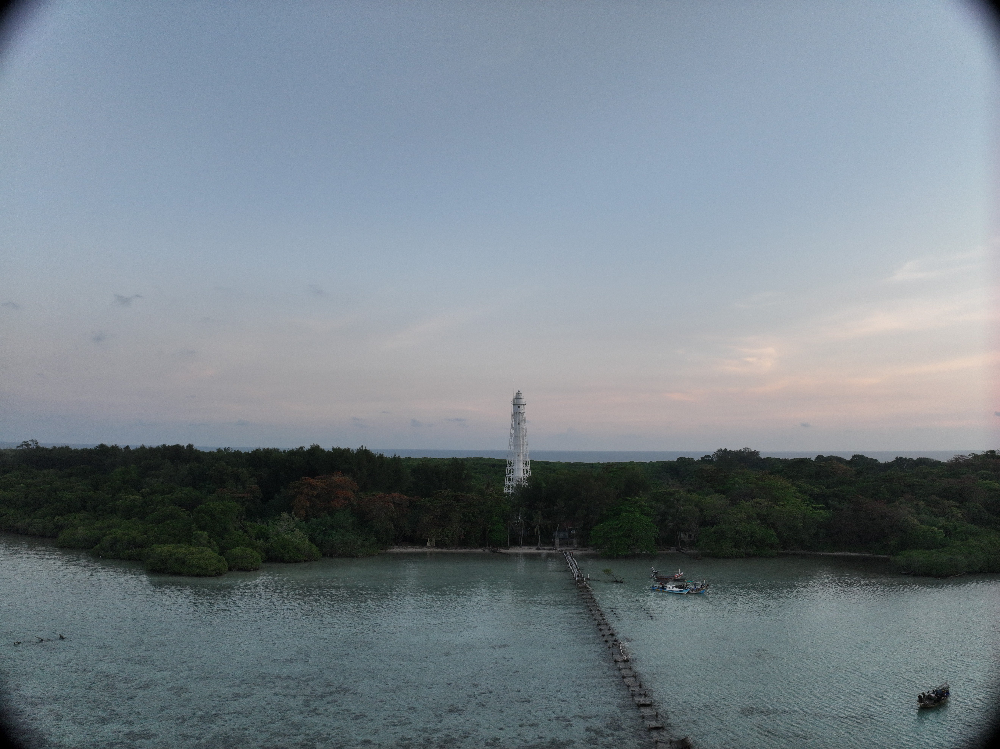
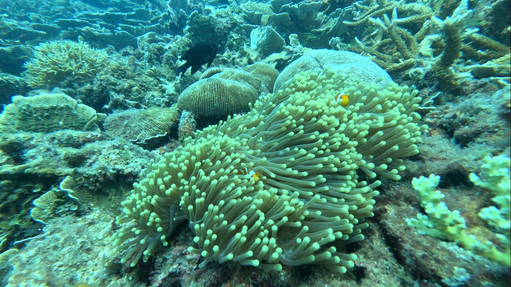
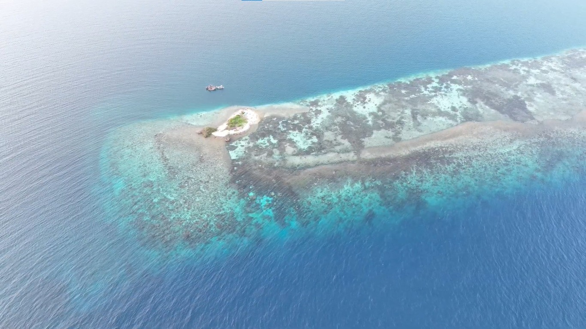
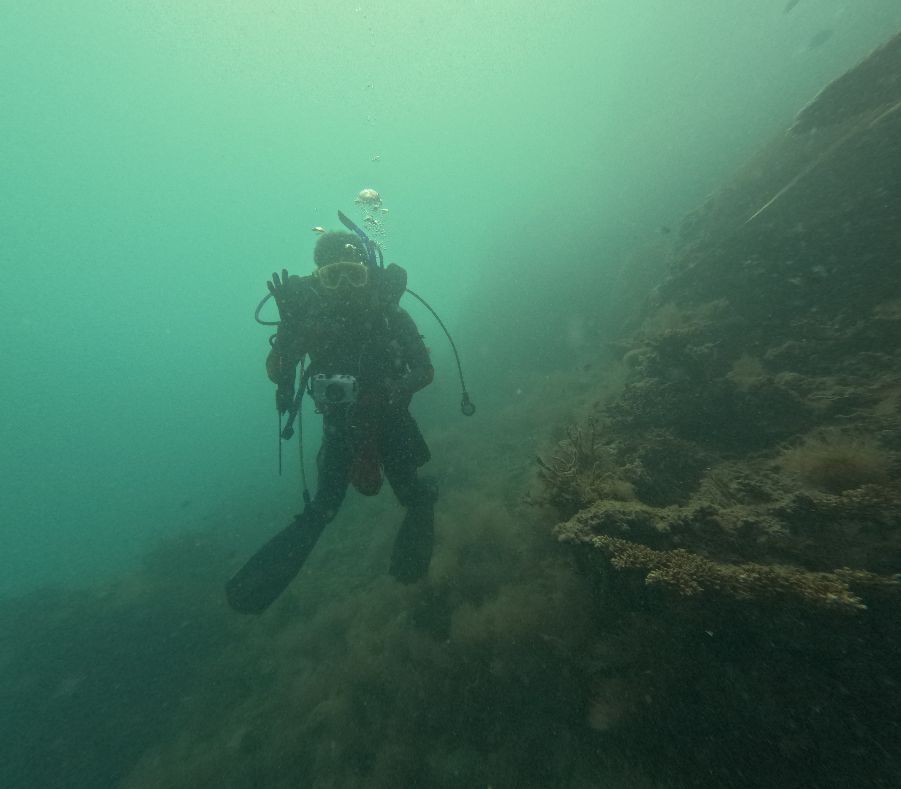
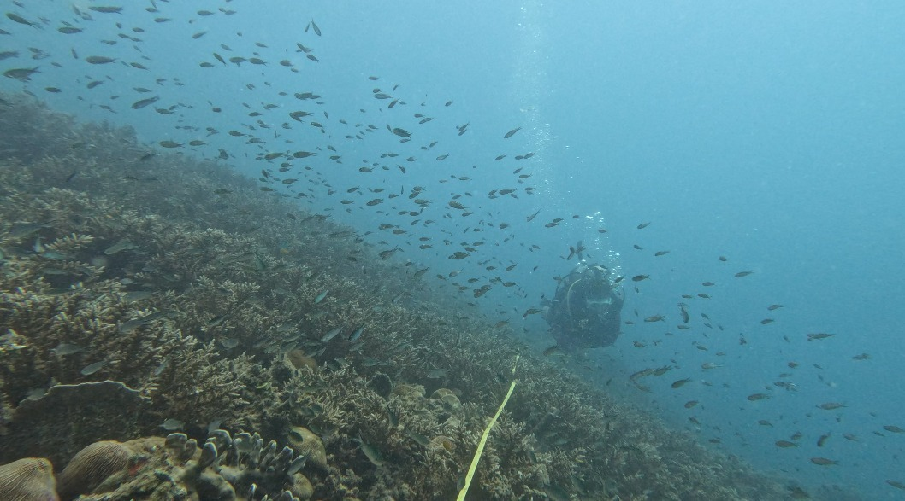
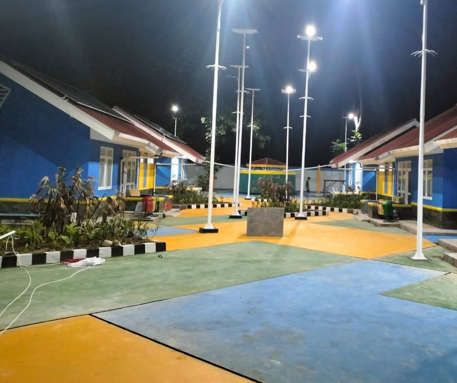
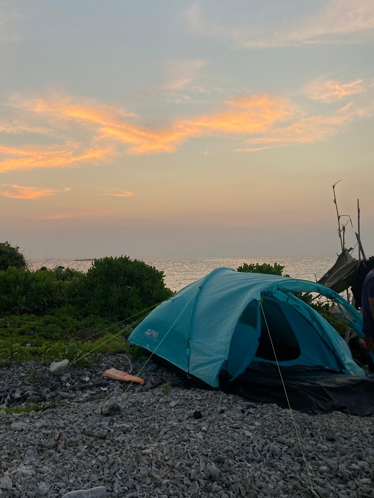
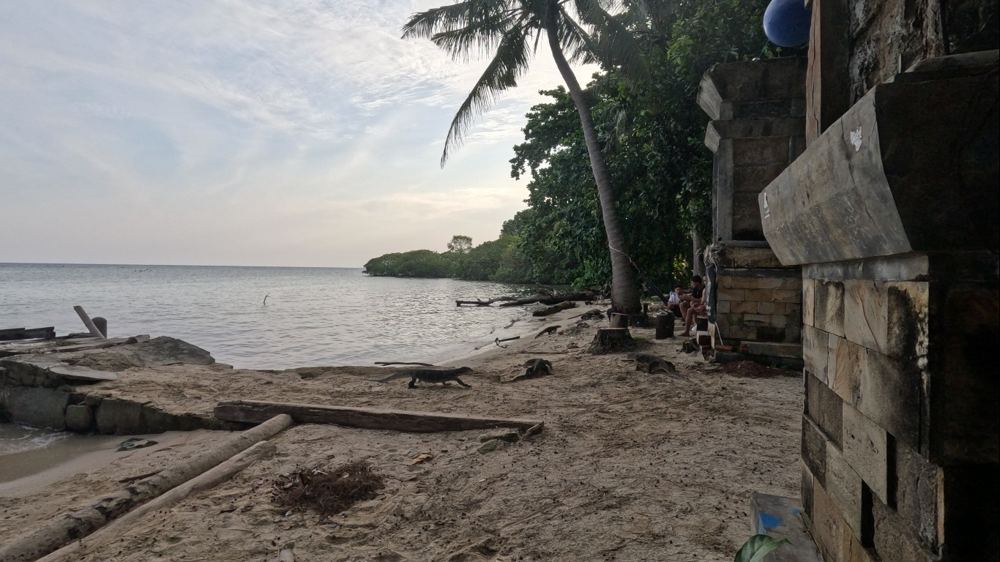
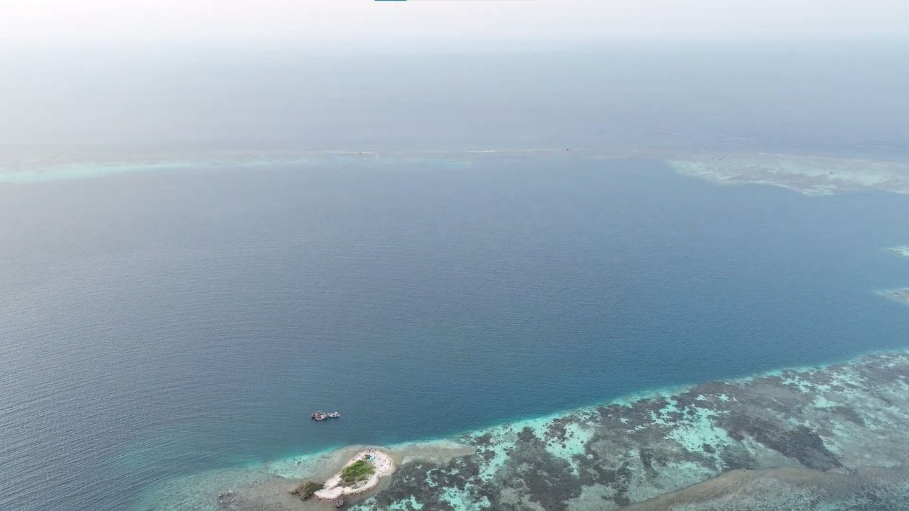
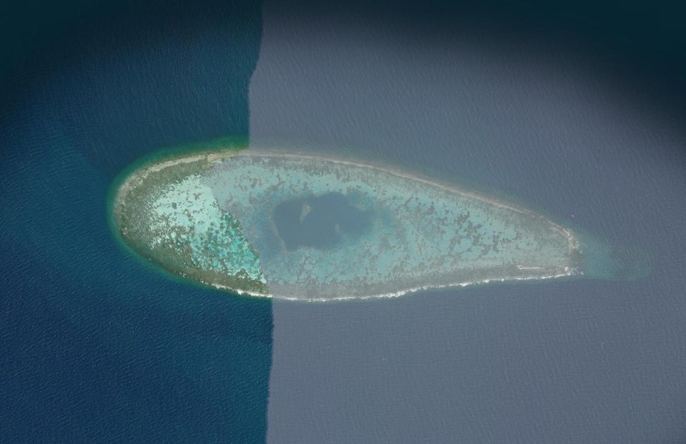

Kepulauan Biawak
Discover the Marine Beauty of Indramayu
Pengalaman bahari alami yang menyajikan pesona alam laut Jawa, keanekaragaman terumbu karang, dan gugusan pulau eksotis yang menawan.
Profil
Informasi umum kawasan pulau, lokasi di Kabupaten Indramayu, dan kekayaan ekosistem.
Lihat SelengkapnyaAkomodasi
Fasilitas penginapan sederhana berupa mess dinas pulau atau area mendirikan tenda.
Lihat SelengkapnyaTransportasi
Rute perjalanan dari Muara Tegur dan durasi kapal motor.
Lihat SelengkapnyaArea Wisata
Destinasi wisata kepulauan meliputi Pulau Biawak, Pulau Gosong, dan Pulau Candikian.
Lihat SelengkapnyaProfil Kepulauan Biawak
Kawasan gugusan pulau terluar di perairan Laut Jawa yang berada dalam wilayah administratif Kabupaten Indramayu, Jawa Barat. Kepulauan ini terdiri dari Pulau Biawak, Pulau Gosong, dan Pulau Candikian.
Lokasi Strategis
Terletak di Laut Jawa, kawasan gugusan pulau ini memiliki karakter geografis khas perairan lepas pantai Kabupaten Indramayu dengan keasrian laut yang terjaga.
Potensi Wisata Bahari
Menyajikan pemandangan alam bawah laut yang spektakuler, cocok untuk aktivitas selam (diving), snorkeling, penelitian konservasi bahari, dan fotografi flora-fauna.


Gugusan Pulau Terjaga

Diving & Snorkeling

Terumbu Karang
Hamparan karang tepi (fringing reef) yang sehat menjadi habitat beragam jenis ikan hias, biota laut bernilai tinggi, serta pemandangan bawah air yang jernih.
Hutan Mangrove
Vegetasi bakau/mangrove yang rimbun berfungsi memproteksi pantai dari abrasi sekaligus habitat alami burung pesisir dan satwa biawak liar (Varanus salvator).
Padang Lamun
Ekosistem lamun (seagrass) di perairan dangkal mendukung rantai makanan bahari, penyerapan karbon, dan tempat pembesaran berbagai larva fauna laut.
Transportasi Menuju Kepulauan
Alur perjalanan laut menuju Kepulauan Biawak memerlukan persiapan khusus dengan memperhatikan kondisi cuaca dan laut Jawa.
Alur Perjalanan Wisatawan
Indramayu
Pusat kota / titik kedatangan darat di Kabupaten Indramayu.
Titik Keberangkatan
Muara Tegur, Kabupaten Indramayu.
Kapal Motor
Menyeberang menggunakan Kapal Motor sewaan / tradisional.
Kepulauan Biawak
Tiba di Pulau Biawak & sekitarnya.
Muara Tegur
Muara Tegur, Kabupaten Indramayu, Jawa Barat.
Kapal Motor
Kapal motor kayu milik nelayan setempat atau kapal ekspedisi/patroli.
± 5 Jam Perjalanan Laut
Durasi bergantung pada kondisi angin dan gelombang laut.
Akomodasi Penginapan
Fasilitas menginap di Pulau Biawak bersifat sederhana dan mengusung konsep ramah lingkungan (eco-tourism).

Mess / Penginapan Dinas
Penginapan sederhana berupa rumah mess petugas navigasi/mercusuar di Pulau Biawak. Kamar memiliki fasilitas dasar yang diperuntukkan bagi tamu, peneliti, atau wisatawan dengan kuota terbatas.
- Fasilitas sanitasi standar
- Kapasitas terbatas (perlu izin khusus)

Mendirikan Tenda (Camping)
Wisatawan dapat mendirikan tenda di spot area pantai Pulau Biawak. Pengalaman berkemah terbuka menikmati suasana malam tepi pantai dan lanskap langit bintang secara langsung.
- Membawa peralatan tenda & perlengkapan mandiri
- Menjaga kebersihan & tidak merusak ekosistem
Area Wisata Kepulauan
Gugusan 3 pulau unik yang membentuk kawasan konservasi dan wisata bahari di Indramayu.

Pulau Biawak
Pulau utama yang terkenal dengan mercusuar peninggalan Belanda setinggi 65 meter, habitat biawak air alami (Varanus salvator), hutan mangrove rimbun, serta spot diving yang mengagumkan.

Pulau Gosong
Pulau pasir (gosong pasir) yang muncul di tengah laut. Memiliki perairan tenang berwarna turquoise dengan hamparan terumbu karang mengelilinginya, sangat pas untuk snorkeling ataupun diving.

Pulau Candikian
Bagian dari gugusan Kepulauan Biawak yang kaya akan potensi ekosistem mangrove dan terumbu karang alami. Ditemukan penyu di pulau ini, tentunya cocok untuk kegiatan konservasi dan eksplorasi lingkungan laut.
Navigasi Utama
Informasi & Layanan
- Kabupaten Indramayu, Jawa Barat
- +62 877-2759-8686
- @indramayuexotic
© 2026 Biawak Marine Tourism. Seluruh hak cipta dilindungi.